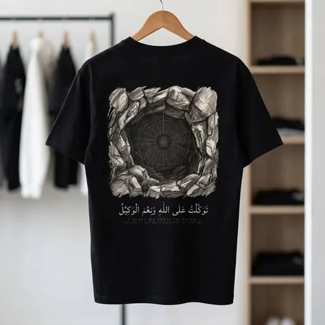
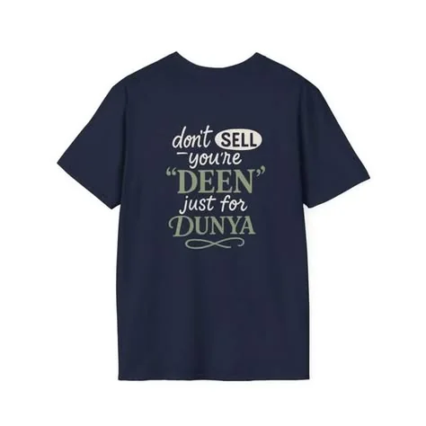
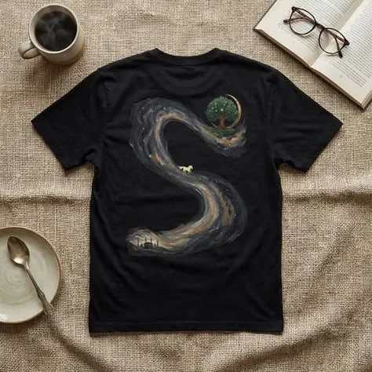

Print-on-demand brand
TAQEN Collection
Islamic and faith-inspired apparel, built by six school friends between study sessions.
Opens in a new tab. The store is still online, but no new products are being added.
-

Design 1 -

Design 2 -

Design 3
- Timeline
- Started early Ramadan 2026, launched early 2026
- Outcome
- No orders. The store is still online, but no longer developed.
- Built by
- Six school friends from Rangpur
- Built with
- HTML, JavaScript, Supabase, Netlify, Printify
The brand
The idea
TAQEN is a print-on-demand brand for Islamic and faith-inspired apparel, art prints and accessories. Six school friends from Rangpur, Bangladesh built it between study sessions, working mostly from their phones. The goal was a brand for Muslim customers who wanted modest, stylish clothing with real stories behind the designs.
The problem
Modest, stylish clothing suited to Muslim customers was hard to find. Most available options were generic shirts with Arabic text, or art that looked mass-produced rather than crafted. TAQEN set out to fill that gap with designs rooted in Islamic history, geometry and calligraphy.
The team
- Ruhan Tahlil Islam BrittoCo-Founder, CEO and Creative Director
- Muntasim Rahman SoumikCo-Founder and Designer
- Nuhu Al Muntasir SwacchoCo-Founder, Marketing and Community
- Abu Dawud DilshanCo-Founder, Visual Director and Marketing
- Yusuf AbdullahCo-Founder, Outreach and Community
- Akaied Al Mazid ProttoyCo-Founder, Community Growth
The team covered product and logo design, website logic, front end and back end, content, customer support, and social media marketing.
The store
What was built
- A storefront with a home page, product catalog, cart and About page
- Shipping, returns, privacy and terms pages
- 25+ products and designs
- A Supabase database for products and orders/cart data
- Hosting on Netlify, with fulfilment through Printify and checkout through Gumroad
Stack: HTML and vanilla JavaScript, Netlify, Supabase, Printify, GitHub.
Getting customers
The team marketed through Pinterest and Facebook. Pinterest reached about 8,000 impressions in its first month and brought a moderate amount of traffic to the store.
Outcome
TAQEN did not receive its first order. Visitors browsed, but none converted, and as team members became busy with school the project slowed. The store remains online, but no new products are being added and the database is inactive.
What went wrong
Technical and payment hurdles
Payment options were limited, so checkout stayed on Gumroad's off-site flow, and backend authentication issues with Supabase took time away from growth.
Limited time and capacity
All six founders were students, so the project depended on spare hours.
Checkout trust
Sending customers to an off-site checkout likely cost trust at the most important moment.
Traffic
Pinterest produced reach, but reach did not turn into buyers.
What the team learned
Trust and checkout friction kill conversion
Visitors who browse will not buy if payment feels unfamiliar or off-site.
A team needs commitment beyond the build
Launching is the easy part. Steady marketing and iteration are what keep a store alive.
Validate demand before building the full store
Testing designs and interest first would have shown what customers wanted before the whole site was built.
Skills gained
Product design, marketing, website logic, web design, Supabase and backend work, front-end development, and team coordination.
Links
The store is still online. The rest is where the team posted.